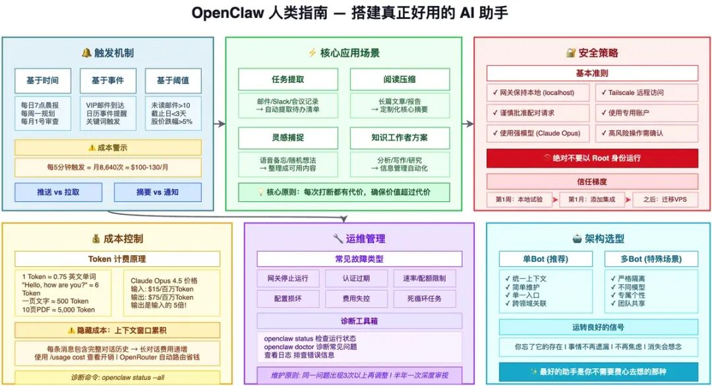

下面我把你这段内容按「可直接放进文档」的结构重排了一版：保留原意，但更清晰、更像一份可执行的 OpenClaw 使用与维护指南。
1）核心理念：让 OpenClaw “悄然发挥作用”
1.1 触发器三类
A. 基于时间（Time-based）在固定时间触发动作：每天 7 点、每周一早晨、每月 1 号。
适合：晨间简报、周回顾、月度预算审查
B. 基于事件（Event-based）某个事件发生时触发：特定人发邮件、日历事件快开始、文件进入指定文件夹、消息命中关键词。
优点：上下文强、信息更“刚需”
难点：把“你关心的事”定义得足够精准，避免通知过载
C. 基于阈值（Threshold-based）指标越过临界点触发：VIP 未读邮件 >10、距离截止 <3 天、股价跌 >5%。
最精密、也最强大：关注趋势和累积变化
代价：需要持续跟踪状态（容易带来成本与复杂度）
2）通知策略：别打扰，除非值得
2.1 摘要 vs 通知
通知：单点事件（“Sarah 发来一封邮件”）
摘要：综合概览（“12 封新邮件，其中 3 封来自客户，含 Sarah 的 Q3 提案”）
2.2 推送 vs 拉取
推送：助手主动找你（更容易打断）
拉取：你需要时主动问（更可控）
2.3 黄金原则：打断必须“物有所值”
每条消息都会消耗注意力。你的目标是让你看到通知时的反应是：
“好的，我确实需要知道。”而不是：“又来了，真吵。”
2.4 打断审计（建议长期机制）
目标：助手的每条消息都“有用”
方法：减少触发条件，宁可少而精
最理想状态：隐形助手（它在后台把事做好）
3）真正能坚持的应用场景
3.1 任务提取（从沟通里自动捞待办）
从邮件、聊天、会议记录中提取待办事项
产出一份清晰的可执行列表，减少“我答应了什么”遗漏
3.2 知识工作者三件套（信息管理 → 产出）
A. 阅读压缩：把长文/报告变成“你关心的要点”B. 灵感捕捉：随手发碎片想法，助手帮你整理成可用内容C.（隐含）上下文归档：需要时能快速回忆关键背景
4）维护：如何保持“设置即忘”
4.1 每周 5 分钟例行检查
每周花 5 分钟问自己两个问题：
这个助手还在正常运行吗？
它发的消息还“值得打断我”吗？
正常就结束；有问题趁早修，别等变大。
4.2 抵制“持续优化”的冲动
只在出现规律性信号时再改（不是单次瑕疵）
建议阈值：同一问题出现 ≥3 次再调整
5）常见故障与排查
5.1 常见故障类型
网关停止运行：进程崩溃、机器重启后未自启
认证过期：AI Token / 邮箱 / 消息通道凭据失效
速率限制/配额耗尽：变慢、报错、直到额度重置
配置文件损坏：编辑错误、同步冲突、升级不兼容
费用失控：触发频率过高、死循环、复杂任务超预算
5.2 最简单的报警：缺席感知
如果你设定了每天 7 点简报却没收到——缺失本身就是报警。
5.3 更主动但通常不必：心跳机制
定时发一条“仅用于确认系统活着”的消息。多数人用日报就足够。
5.4 诊断工具箱
openclaw status/ 查看进程：确认网关是否在跑
查看日志：定位错误原因
openclaw doctor：作为第一站的健康检查与修复建议
6）升级策略：克制尝鲜
OpenClaw 活跃迭代，新功能多，但升级会带来：
bug 风险
工作流破坏
维护时间成本
建议：
有明确理由再升级：需要 bugfix / 必要功能 / 安全补丁
每半年做一次深度审视：认真评估配置是否仍称职
7）进阶：单 Bot vs 多 Bot（以后再看）
7.1 单 Bot 的优点
上下文统一：能跨领域关联信息
维护更简单：一套记忆、配置、凭据
单一入口：不用记多个机器人分工
7.2 多 Bot 的优点
关注点隔离（工作/个人、机密隔离）
不同任务用不同模型（贵的做难题，便宜的做简单事）
不同个性/风格/规则
可家庭/团队共享，避免上下文混淆
建议：想多 Bot 就先从工作 + 个人两个开始，用一个月再扩展。
8）安全准则（强制牢记）
网关默认绑定localhost，不要暴露公网（除非你完全理解风险）
远程访问优先用Tailscale（私网加密，攻击面更小）
谨慎批准配对请求（不认识就拒绝）
尽量用专用账户（专用邮箱等，缩小影响面）
保持系统更新（OpenClaw + OS）
强模型更抗注入（如 Opus 级别）
高风险操作要人工确认（发邮件/购买/改重要文件）
定期审查日志
openclaw doctor可视为一次安全与健康审计
绝对不要用 Root 身份运行
9）成本与控制：别被“频率”偷袭
9.1 触发次数会指数放大成本
每 5 分钟一次 → 每月 8,640 次
即使单次几分钱，月账单也能到 $100+（甚至更高）
9.2 Token 成本的关键认知
一次交互 =输入 Token + 输出 Token
输出通常更贵（而且长回复更贵）
输入不只是你那句话，还包括：对话历史、系统提示词、记忆、技能上下文
对话越长，每条消息的成本会逐步增加（复利效应）
9.3 控制成本的手段
用openclaw status --all检查自动化任务（找出高频/高消耗项）
第一个月每周检查 API 控制台用量
发现账单异常：先禁用定时任务（最常见元凶）
OpenRouter 可做模型路由（熟悉基础后再上）
10）“它真的在交租”的信号
你忘了它的存在（隐入背景）
事情不再从指缝间溜走（跟进、截止、承诺不再漏）
你不再那么赶（全局更清晰）
如果它消失了，你会想念它（终极检验）